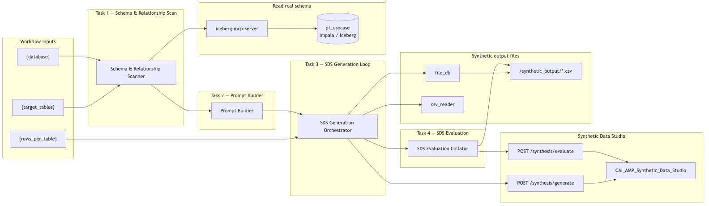
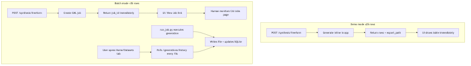
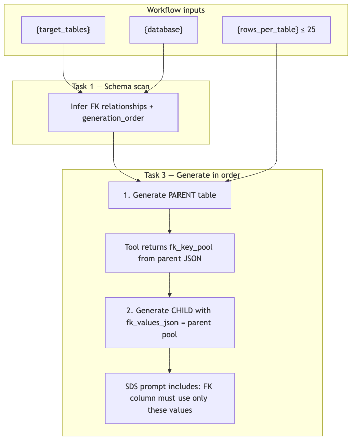
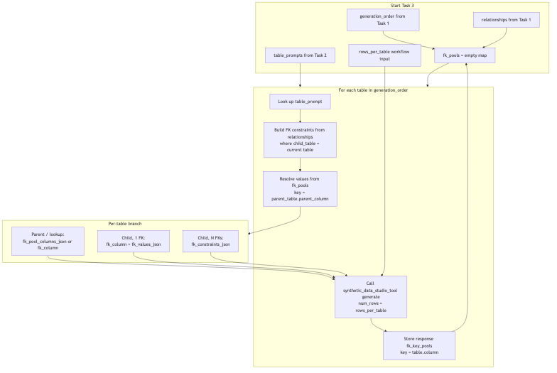
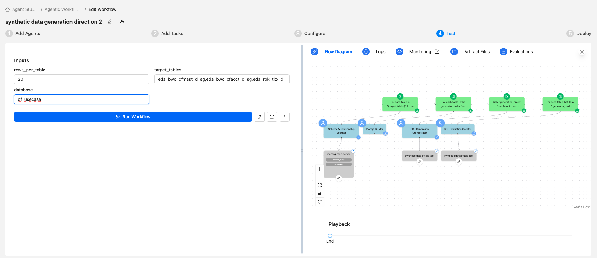

Building the Synthetic Data Generation Workflow (Direction 2)¶
When to use D2¶
Choose Direction 2 when you need a stakeholder-facing integration demo that shows Agent Studio orchestrating Cloudera Synthetic Data Studio (SDS) in one synchronous run:
| Choose D2 when… | Avoid D2 when… |
|---|---|
Demonstrating live SDS generate + evaluate via synthetic_data_studio_tool |
You need production training datasets at 1k+ rows per table → use D3 |
| Showing FK key pools across a parent → child → transaction chain in the SDS UI | You cannot deploy a SDS CAI Application or register the custom tool |
| Teaching four-agent orchestration with two integration surfaces (Impala + SDS REST) | You only need Agent Studio CSV output with no SDS → use D1 |
D2 is bounded by synchronous HTTP timeout (typically 25–100 rows per table for reliable demo runs). The SDS LLM-as-judge verdict is a plausibility rubric, not a statistical fidelity certification. For production ML training data, use D3 deterministic mode.
Overview¶
In this lab you build a four-agent sequential pipeline that generates PII-free
synthetic data for the <your_database> lakehouse by orchestrating Cloudera Synthetic
Data Studio (SDS) — a deployed CAI Application — via a custom REST API tool.
The pipeline scans live Impala schemas, builds generation prompts, calls SDS to produce synthetic rows, enforces referential integrity across tables via FK key pools, and finally asks SDS's built-in LLM-as-judge to score each row 1–5 for quality.
┌────────────────────────────────────────────────────────────────────────────────┐
│ SYNTHETIC DATA GENERATION — AGENT STUDIO + SYNTHETIC DATA STUDIO (D2) │
├────────────────────────────────────────────────────────────────────────────────┤
│ │
│ Input: {target_tables}, {rows_per_table}, {database} │
│ │ │
│ ▼ │
│ ┌──────────────────┐ │
│ │ AGENT 1 │ ← iceberg-mcp-server │
│ │ Schema & │ DESCRIBE, COUNT, profile key columns, FK inference │
│ │ Relationship │ Output: schema manifest + relationship map │
│ │ Scanner │ │
│ └────────┬─────────┘ │
│ │ │
│ ▼ │
│ ┌──────────────────┐ │
│ │ AGENT 2 │ ← LLM only (no tools) │
│ │ Prompt Builder │ Build schema_json + sample_values_json + prompt │
│ └────────┬─────────┘ Output: table_prompts[] per table │
│ │ │
│ ▼ │
│ ┌──────────────────┐ │
│ │ AGENT 3 │ ← synthetic_data_studio_tool only │
│ │ SDS Generation │ POST /synthesis/freeform per table in FK order │
│ │ Orchestrator │ Maintains internal fk_pools map across tables │
│ └────────┬─────────┘ Output: /synthetic_output/<table>_synthetic.json │
│ │ │
│ ▼ │
│ ┌──────────────────┐ │
│ │ AGENT 4 │ ← synthetic_data_studio_tool │
│ │ SDS Evaluation │ POST /synthesis/evaluate_freeform per JSON file │
│ │ Collator │ Output: 1-5 row scores + ML readiness verdict │
│ └──────────────────┘ │
│ │
└────────────────────────────────────────────────────────────────────────────────┘

How to read Figure 1
| Region in the diagram | What it represents | Runs on |
|---|---|---|
Workflow inputs (target_tables, rows_per_table, database) |
The only three variables you set at run time | Agent Studio UI |
| Task 1 → iceberg-mcp-server → |
Live schema discovery — DESCRIBE, COUNT, profiling. Reads real metadata; never exports real row values |
Agent Studio + Impala |
| Task 2 — Prompt Builder | Pure LLM step — converts Task 1 manifest into schema_json, sample_values_json, custom_prompt per table |
Agent Studio (no tools) |
| Task 3 → synthetic_data_studio_tool → POST /synthesis/freeform | Generation loop in FK order; tool builds SDS prompt and calls SDS synchronous mode | Agent Studio tool host → SDS CAI app |
| Task 4 → synthetic_data_studio_tool → POST /synthesis/evaluate_freeform | LLM-as-judge scoring; SDS reads its own export file (see Limitation 4) | Agent Studio tool host → SDS CAI app |
/synthetic_output/*.json |
Local copy written by the tool on the Agent Studio side — useful for debugging, not for SDS evaluate | Agent Studio host |
The diagram shows two separate integration surfaces: Impala (read-only schema) and SDS (generate + evaluate). Agent Studio sits in the middle and orchestrates both.
Source files for all figures in this lab live in
../images/synthetic_data_workflow_d2/ (.mmd sources; rendered .png
co-located in the same project folder).
Re-render after editing diagrams: run ./render_mermaid.sh inside that folder.
⚠️ Understand the Limitations Before You Build¶
This is the most important section in the lab. Read it before touching Agent Studio.
Every constraint below is real and intentional — not a bug you can fix by tweaking a setting. They come from three different layers. Understanding which layer causes each limitation helps you choose the right path (stay in D2 for a demo, or move to D3 for training data).
Not suitable for production ML training¶
D2 is a stakeholder showcase, not a production pipeline. Do not use it to generate training datasets at scale.
| Why not | Detail |
|---|---|
| Practical row ceiling | Synchronous SDS generation is bounded by HTTP timeout — typically 25–100 rows per call for reliable demo runs. Production needs 1k–1M+ rows per table via D3 CML Jobs. |
| Prompt-scoped columns | SDS freeform generates only columns described in the prompt — not guaranteed full DESCRIBE parity. |
| Best-effort FK integrity | FK values are passed via fk_values_json / prompt constraints, not deterministic parent-pool sampling in compiled code. |
| Subjective evaluation | Task 4 uses SDS LLM-as-judge (1–5 scores), not KS/chi-squared/PII-regex gates with --strict PASS/FAIL. |
| No batch automation | SDS batch mode (large-scale async) requires separate Jobs outside this Agent Studio workflow. |
| Interactive-only ops | No scheduled CML Jobs, no reproducible --seed CLI, no artefact paths for downstream ML pipelines. |
For production ML training data, use D3 deterministic mode.
| Layer | What it is | Examples in this lab |
|---|---|---|
| ① SDS product design | How Cloudera Synthetic Data Studio is built and deployed | Sync vs batch mode, two-filesystem export, freeform = prompt-driven columns |
| ② D2 integration design | How this Agent Studio workflow wires Agent Studio to SDS | Synchronous SDS calls, 500-row safety cap in custom tool, dataset_name for Studio UI, FK via prompt not code |
| ③ LLM / inference physics | Hard limits of LLM tabular generation at scale | Context window, max_tokens, non-determinism, wide-table prompt collapse |
None of these are Impala or <your_database> schema defects. The source tables are fine. The
constraints are in the generation path you are using.
What D2 is — and is not¶
| D2 | |
|---|---|
| IS | An interactive demo and SDS showcase — shows Agent Studio orchestrating SDS, a live FK chain with matching IDs across tables, PII surrogate generation, and LLM-as-judge quality scoring. |
| IS NOT | A training data pipeline, a schema-cloning tool, or a batch ETL job. |
Design intent: D2 was scoped as a stakeholder-facing integration demo — prove that Agent Studio can discover schemas, orchestrate SDS, enforce FK relationships, and score output quality in one synchronous run. That scope deliberately trades volume, schema parity, and reproducibility for live interactivity.
Limitation 1 — Row volume is bounded by synchronous HTTP timeout¶
Root cause¶
Primary: SDS product design (layer ①)
Synthetic Data Studio exposes two execution paths:
| Mode | SDS flag | Behaviour |
|---|---|---|
| Synchronous | (no is_demo flag) |
SDS generates rows inside the HTTP request and returns them in the response body. Suitable for hundreds of rows; bounded by server-side timeout. |
| Batch | is_demo: false |
Asynchronous — SDS creates a CML job, returns a job ID immediately, and finishes later on the cluster. No webhook or callback when done. |
Secondary: D2 integration design (layer ②)
The custom tool synthetic_data_studio_tool calls the synchronous SDS endpoint and
enforces DEMO_MODE_MAX_ROWS = 500 locally as a safety ceiling. The generate payload
passes num_questions = rows_per_table directly to SDS:
# tools/synthetic_data_studio_tool/tool.py
payload = {
...
"num_questions": num_rows, # capped at 500 by _demo_row_count()
"topics": [dataset_name], # human-readable label shown in Studio UI
}
Why this design exists¶
- Agent Studio is synchronous. Each task waits for the previous one. A batch SDS job that returns immediately and finishes 20 minutes later has no place to "resume" in the pipeline — there is no job-polling step in D2.
- Demo audiences need instant feedback. Waiting on a CML job breaks the live-demo narrative.
- SDS batch mode is a separate product workflow (open SDS UI → generate → monitor Jobs page). D2 does not reimplement that workflow inside Agent Studio.
What this means for you¶
| Setting | Result |
|---|---|
rows_per_table = 25 |
Works — good default for a live demo |
rows_per_table = 100 |
Works — SDS generates synchronously within timeout |
rows_per_table = 500+ |
May hit HTTP timeout (~4–5 min) depending on SDS server load |

How to read Figure 2
| Path | Left: Synchronous mode | Right: Batch mode |
|---|---|---|
| Trigger | num_questions in POST body, no async flag |
is_demo: false |
| What happens | SDS generates rows inside the HTTP request | SDS creates a CML job and returns immediately |
| When you get data | Seconds to minutes — rows in API response + SDS export file | Minutes to hours — must poll Jobs page or SDS Datasets tab |
| Human step required? | No — fits Agent Studio sequential tasks | Yes — monitor job, then find output file |
| Used in D2? | Yes — tool uses synchronous path | No — no job-polling agent in this workflow |
The D2 custom tool is wired to the left path only. That is a deliberate integration choice: Agent Studio tasks run synchronously and cannot pause mid-pipeline waiting for a CML job to finish.
Workaround for training volume¶
Use Direction 3 (generate_synthetic_data.py as a CML Job) or call SDS batch mode
directly from the SDS UI — not through this Agent Studio workflow.
Bottom line: for training-scale data (10k–100k+ rows per table) use D3 CML Jobs. D2 is designed for interactive demos where 25–100 rows per table is sufficient to show the FK chain, evaluate quality, and tell the story.
Limitation 2 — Column scope is controlled by the prompt, not Impala¶
Root cause¶
Primary: SDS freeform technique design (layer ①)
D2 uses SDS technique: "freeform" — the LLM generates a JSON array of row objects from
a text prompt. The prompt lists column names and rules. SDS has no connection to
Impala at generation time; it does not read DESCRIBE output unless Agent 2 puts that
information into schema_json and the prompt.
The custom tool reinforces this explicitly:
Hard rules (built into every generate prompt):
- Each object MUST use exactly the column names listed below as keys.
So the SDS preview table shows prompt columns only — never the full Impala schema.
Secondary: LLM / inference physics (layer ③)
Even if you listed all 896 columns of source_transactions in the prompt:
| Constraint | Typical limit | Effect on wide tables |
|---|---|---|
| LLM context window | ~128k tokens (model-dependent) | 896 column definitions + 25 row objects may exceed usable space |
max_tokens in tool payload |
8192 (fixed in tool) |
Response may truncate mid-JSON — incomplete or invalid rows |
| LLM attention | Degrades with very long structured lists | Model may drop columns, merge fields, or return only the first few keys |
This is why full-schema generation of wide tables via SDS freeform is not technically viable in D2, even if you remove the demo row cap.
Tertiary: D2 workflow design (layer ②)
Task 2 (Prompt Builder) is an LLM agent that chooses which columns to include in
schema_json. If Task 2 omits columns — intentionally or by mistake — SDS cannot
recover them. There is no post-generation schema merge step in D2.
The earlier run that showed only transaction_no for source_transactions was a Task 2 scope
failure (Agent 2 sent a 1-column schema_json), not an SDS bug. SDS did exactly what
it was asked.
Why this design exists¶
- Freeform mode is flexible for demos and rubric-driven evaluation — you control exactly which business fields appear without needing a trained SDV model per table.
- Wide banking ledger tables (800+ audit/system columns) are rarely needed for a story demo; semantic core + FK columns are enough to show referential integrity.
- Full column parity requires programmatic column-by-column generation (D3) or SDV/statistical synthesizers trained on column metadata — not a single LLM prompt.
Task 2 sits between Impala and SDS in Figure 1: it translates DESCRIBE metadata
into the schema_json list that SDS freeform will honour. If that list is too short,
the SDS preview will be too short — regardless of how many columns exist in Impala.
What this means for you¶
| Expectation | D2 can deliver? | Why |
|---|---|---|
| Show FK chain with 7–15 meaningful columns | Yes — if Task 2 follows mandatory column rules | Prompt-sized, within token limits |
Match all 896 Impala columns for source_transactions |
No | LLM token limits + freeform technique |
SDS preview matches DESCRIBE column count |
No — by design | Preview = prompt scope, not source schema |
Workaround for full-schema parity¶
- Direction 3 —
describe_to_manifest.pybuilds a manifest from liveDESCRIBE;generate_synthetic_data.pyemits every column (active synthesis + type-valid defaults for the rest). - Do not expect D2 + SDS freeform to clone wide-table schemas — that is outside the technique's design envelope.
Limitation 3 — Not suitable for ML training¶
Root cause¶
This limitation is the combined effect of Limitations 1 and 2 plus evaluation design. It is not a single switch — it follows from architectural choices at every layer.
| Gap for ML training | Caused by | Layer |
|---|---|---|
| Too few rows (25–100 in sync mode) | HTTP timeout bound + tool safety cap | ① + ② |
| Incomplete column set | SDS freeform + Task 2 prompt scope | ① + ② + ③ |
| Non-reproducible rows | LLM sampling (temperature: 0.7) |
③ |
| FK integrity not guaranteed at scale | FK enforced via prompt text, not deterministic code | ② + ③ |
| No statistical fidelity tests | D2 evaluation = SDS LLM-as-judge (1–5), not KS/chi-square | ② |
Why this design exists¶
D2 optimizes for live demo quality, not ML dataset certification:
- Stakeholders need to see the pipeline run end-to-end in one session.
- SDS's LLM judge gives human-readable justifications ("Score 4/5 — plausible domain codes") — good for demos, insufficient for model-training sign-off.
- ML training requires reproducible, high-volume, full-schema, statistically validated data — a different product requirement solved by Direction 3.
What this means for you¶
| D2 demo | Training-ready (D3) | |
|---|---|---|
| Rows | 25–100 per table (sync HTTP; tool cap 500) | 10k–100k+ (--rows CLI / CML Job) |
| Column set | Semantic core (7–15 cols) | All source columns from DESCRIBE |
| Reproducibility | Non-deterministic (LLM) | Fixed seed (--seed 42) |
| FK integrity | Prompt-constrained (best-effort) | pandas enforce_fk() (deterministic) |
| Evaluation | LLM 1–5 score (qualitative) | KS, chi-square, null-rate, PII regex, FK completeness |
dataset_ready_for_training: true in D2 |
Means "passes SDS rubric in demo context" | Does not mean ML-ready — misleading if read literally |
Important: when Task 4 reports
dataset_ready_for_training: true, that verdict comes from the SDS LLM judge scoring plausibility on a small sample of rows. It does not certify column parity, volume, statistical fidelity, or programmatic FK integrity. Treat it as a demo quality gate, not a training sign-off.
Workaround¶
Use Direction 3 (../synthetic_data_workflow_d3/):
describe_to_manifest.py → generate_synthetic_data.py → evaluate_synthetic_data.py
→ load to Iceberg → CML training job.
Limitation 4 — Two-filesystem evaluation (generate vs evaluate paths)¶
Root cause¶
Primary: Platform deployment architecture (layer ① + ②)
Agent Studio and Synthetic Data Studio run as separate CAI Applications on separate
hosts. They do not share a filesystem.
When you call generate:
Agent Studio host SDS application host
───────────────── ────────────────────
/synthetic_output/ (SDS internal path)
source_customers_synthetic.json ←── tool writes here (local copy)
freeform_data_gpt-4o-mini_<ts>_test.json
↑ SDS writes here (export_path)
The custom tool returns both paths in its response:
| Field | Location | Used by |
|---|---|---|
output_path |
Agent Studio host | You (debugging), not SDS |
sds_export_path / eval_import_path |
SDS host | SDS evaluate API only |
Secondary: SDS API design (layer ①)
POST /synthesis/evaluate_freeform reads import_path on the SDS server's disk.
It cannot reach Agent Studio's /synthetic_output/. There is no file-upload parameter in
the evaluate API — path must be SDS-local.
Why this design exists¶
- CAI Applications are isolated for security and resource management — shared volumes between apps are not assumed.
- SDS owns its export lifecycle (generate → save → evaluate → score) on its own disk.
- The tool writes a local JSON copy on the Agent Studio side for debugging and trace visibility, but that copy is not part of SDS's evaluate contract.
What this means for you¶
| Path you pass to evaluate | Result |
|---|---|
eval_import_path from generate response (e.g. freeform_data_..._test.json) |
Works — SDS finds the file |
output_path (e.g. /synthetic_output/source_customers_synthetic.json) |
404 Not Found — file is on the wrong host |
This is a deployment architecture constraint, not an Agent Studio bug. Task 4 must
read eval_import_path from Task 3's generate response for each table.
See Figure 1 — Task 3 writes to /synthetic_output/ (local) while SDS evaluate
(Task 4) reads from the SDS app box (POST /synthesis/evaluate_freeform). The diagram
shows both paths diverging after the tool call.
Limitation 5 — FK integrity is prompt-based, not programmatic (D2-specific)¶
Root cause¶
D2 integration design (layer ②)
In Direction 3, FK values are enforced after generation with deterministic code:
In D2, FK integrity is enforced by injecting allowed values into the SDS prompt:
The LLM is asked to comply. It usually does for small row counts and simple FKs. It is not guaranteed — especially under token pressure or with many columns.
Why this design exists¶
- D2 deliberately avoids post-generation JSON patching — the agent orchestrator passes FK pools into SDS once and trusts the model.
- This keeps the demo simple (one generate call per table, no file rewrite step).
- Deterministic FK enforcement requires a code path (D3) or a dedicated SDS technique beyond freeform.
What this means for you¶
For a 10-row demo, prompt-based FK linking is usually sufficient and visually verifiable.
For production training data, use D3's programmatic enforce_fk().

How to read Figure 3
| Step in diagram | What happens | D2 mechanism |
|---|---|---|
| Task 1 | Infers relationships + generation_order |
iceberg-mcp-server + naming conventions |
| 1. Generate PARENT | e.g. source_customers first |
Agent 3 calls tool with fk_pool_columns_json |
| Tool returns fk_key_pool | Distinct values from parent JSON, e.g. ["SYN-CUST-000001", ...] |
Parsed from generated rows — not from Impala |
| 2. Generate CHILD with fk_values_json | e.g. source_accounts |
Agent 3 passes parent pool into tool |
| SDS prompt includes FK constraint | "Column customer_id MUST use only values from this list: [...]" |
Tool appends constraint lines — no JSON patching after generate |
This is the centrepiece demo story: synthetic IDs born in the master table propagate to children because Agent 3 feeds the pool forward, not because SDS reads Impala FK constraints.
Summary — which limitation comes from where¶
| Limitation | SDS product | D2 workflow design | LLM / inference |
|---|---|---|---|
| Sync row ceiling (~25–100) | ✓ HTTP timeout bound | ✓ 500-row safety cap in tool | |
| Batch mode not in pipeline | ✓ async CML jobs | ✓ no job-polling agent | |
| Columns = prompt scope | ✓ freeform technique | ✓ Task 2 chooses columns | ✓ token limits |
| No full wide-table schema | ✓ demo semantic subset | ✓ 896 cols impractical | |
| Not ML-training ready | ✓ LLM judge only | ✓ no stats eval | ✓ non-deterministic |
| Two-filesystem evaluate | ✓ evaluate reads local path | ✓ separate CAI apps | |
| FK best-effort | ✓ freeform = prompt | ✓ no post-patch | ✓ LLM compliance |
Acceptable demo output bar¶
A demo that produces only 1–2 columns is not acceptable — that indicates Task 2 failed the mandatory column rules (a workflow configuration issue you can fix), not an inherent SDS limitation.
Before accepting the output, verify:
| Check | Required | If it fails |
|---|---|---|
| FK columns present | Both sides of every relationship in each table's JSON | Re-paste Task 2 description; check relationships from Task 1 |
| Minimum column count | ≥ 4 master, ≥ 6 account, ≥ 7 transaction | Agent 2 omitted semantic core — fix Task 2 output |
| FK values match | Child FK values ⊆ parent pool | Agent 3 did not pass fk_values_json — check Task 3 trace |
| Evaluation scores | Average ≥ 3.5/5 per table | Review schema_json types and PII surrogate format |
| PII surrogates | SYN-CUST-* / SYN-ACCT-* format |
Adjust Task 2 custom_prompt rules |
Diagram quick reference¶
All figures are rendered from Mermaid sources in ../images/synthetic_data_workflow_d2/.
| Figure | File | Consult when |
|---|---|---|
| Figure 1 | architecture.png |
Understanding the full pipeline — which agent talks to Impala vs SDS |
| Figure 2 | sds_demo_vs_batch.png |
Explaining the 25-row cap and why batch mode is out of scope for D2 |
| Figure 3 | fk_integrity_flow.png |
Explaining how FK values propagate parent → child via SDS prompts |
| Figure 4 | agent3_orchestration_state.png |
Debugging Agent 3 — fk_pools map, generate order, parent vs child branches |
| Figure 5 | final_workflow.png |
Verifying Agent Studio UI wiring — agents, tasks, context links |
Demo narrative using the figures (suggested order for presenting):
- Figure 1 — "Four agents, two external systems: Impala for schema, SDS for generate/evaluate."
- Figure 2 — "We use the synchronous SDS path — 25–100 rows per call. Batch mode is a different product workflow."
- Figure 5 — "Here is what you build in Agent Studio — sequential tasks with context."
- Figure 4 + Figure 3 — "Agent 3 walks tables in order, stores parent ID pools, injects them into child prompts."
- Re-run and open JSON files — spot-check that child FK values ⊆ parent pool (Beats in Step 7).
Prerequisites¶
1. Synthetic Data Studio — deployed CAI Application¶
| Setting | Value |
|---|---|
| SDS application URL | https://synthetic-data-generator-xxx.ml-xxxx.cloudera.site |
| Swagger docs | Append /docs to the URL above (requires CAI login) |
| Auth | Authorization: Bearer <CDSW_APIV2_KEY> |
| OPENAI_API_KEY | Set in the SDS Project → Settings → Environment Variables |
Verify the SDS app is running before building the workflow:
export SDS_URL=https://synthetic-data-generator-xxx.ml-xxxx.cloudera.site
export CDSW_APIV2_KEY=<your-key>
curl -s "$SDS_URL/health" -H "Authorization: Bearer $CDSW_APIV2_KEY" | python -m json.tool
A healthy response returns {"status": "ok"}.
2. Iceberg MCP — iceberg-mcp-server¶
Already registered in Agent Studio from Part 1.
| Parameter | Value |
|---|---|
| IMPALA_HOST | hue-impala-gateway.datalake.…cloudera.site |
| IMPALA_PORT | 443 |
| IMPALA_USER | Provided by instructor |
| IMPALA_PASSWORD | Provided by instructor |
| IMPALA_DATABASE | <your_database> |
3. Custom tool — synthetic_data_studio_tool¶
The tool is registered in the Agent Studio Tools Catalog at tools/synthetic_data_studio_tool/.
Install tool dependencies in your CAI project environment before registering:
Set these UserParameters on the tool:
| Parameter | Value |
|---|---|
| sds_base_url | https://synthetic-data-generator-xxx.ml-xxxx.cloudera.site |
| api_key | Your CDSW_APIV2_KEY |
| model_id | gpt-4o-mini |
| inference_type | openai |
| timeout_seconds | 300 |
Do not use
inference_type: CAIIwith acaii_endpointpointing at OpenAI. CAII authenticates with aCDP_TOKEN, not an OpenAI key. For direct OpenAI access setinference_type: openaionly.
Step 1: Create the Workflow¶
In Agent Studio, click Agentic Workflows → Create Workflow. Select New Workflow and enter:
- Workflow Name:
Synthetic Data Generation D2 - Process type: Sequential
Click Create Workflow.
Step 2: Configure Workflow Settings¶
In the workflow editor, configure:
| Toggle | Setting | Why |
|---|---|---|
| Is Conversational | OFF | This is a pipeline — not a chat |
| Manager Agent | OFF | Sequential order, no routing needed |
Add workflow input variables¶
Add exactly three input variables. Do not add parent, column, parent_table,
parent_column, or any FK-related variable — FK linking is internal to Agent 3.
| Variable name | Default value | Description |
|---|---|---|
target_tables |
source_customers,source_accounts,source_transactions |
Comma-separated table names |
rows_per_table |
25 |
Rows to generate per table (25–100 recommended for a live demo; tool safety cap is 500) |
database |
<your_database> |
Impala database |
Template rule: Agent Studio treats every
{word}in agent/task text as a workflow variable. Only{target_tables},{rows_per_table}, and{database}are allowed. Never write{parent_table},{parent_column}, or{column}anywhere — if you do, Agent Studio will create a fourth variable and the run will fail withTemplate variable 'parent_table' not found.
Step 3: Add All Four Agents¶
Click + Add Your First Agent to open the agent panel. Create all four agents using the definitions below. After filling in each agent's details, click Create Agent, then attach tools before moving to the next agent.
Agent 1 — Schema & Relationship Scanner¶
| Field | Value |
|---|---|
| Name | Schema & Relationship Scanner |
| Role | Banking Lakehouse Schema Profiler and FK Inference Specialist |
| LLM Model | gpt-4o (Default) |
Backstory:
You are a banking data analyst who reads Impala schemas via the iceberg-mcp-server,
runs lightweight statistical queries (DESCRIBE, COUNT, GROUP BY top-20, MIN/MAX/AVG),
and infers foreign-key relationships from column-name conventions. Master tables often share
customer_id/customer_id as the customer key; Account tables often share account_no; Transaction tables often share
transaction_ref; messaging tables often share message_ref. You flag PII-risk columns and never export
real values — only aggregated statistics and representative codes.
Goal:
1. Profile every table in {target_tables} — column types, nullability, distributions, ranges.
2. Infer FK relationships from column-name conventions (no JOIN validation needed for the demo).
3. Produce a topological generation order (parents before children).
4. Output a combined schema manifest + relationship map JSON.
MCP to add: iceberg-mcp-server — add get_schema and execute_query.
Agent 2 — Prompt Builder¶
| Field | Value |
|---|---|
| Name | Prompt Builder |
| Role | Synthetic Data Prompt Engineer |
| LLM Model | gpt-4o (Default) |
Backstory:
You are a prompt engineer specialised in tabular synthetic data. You translate a
column profile into explicit per-column generation rules, describe the table's business
context from its source-system prefix, and provide 3-5 synthetic example rows
constructed from observed distributions (never real rows). You ensure the prompt
instructs SDS to emit JSON row objects (one object per row).
Goal:
For each table in the generation order, produce schema_json, sample_values_json,
and custom_prompt payloads ready for synthetic_data_studio_tool.
Tools / MCP: None — LLM reasoning only.
Agent 3 — SDS Generation Orchestrator¶
| Field | Value |
|---|---|
| Name | SDS Generation Orchestrator |
| Role | SDS Generation Orchestrator |
| LLM Model | gpt-4o (Default) |
Backstory:
You process generation_order from Task 1 exactly ONCE, table by table, like a checklist.
You track a done_tables list. Before calling synthetic_data_studio_tool for any table,
check that the table is NOT in done_tables. After the tool returns, immediately add the
table to done_tables. Move to the next table on the list. When every table in
generation_order appears in done_tables, STOP and emit the final JSON output.
NEVER call generate for a table that is already in done_tables — that is an error.
NEVER loop back to source_customers once it is done.
You maintain an internal fk_pools map keyed as "table.column". After each parent
generate call, store fk_key_pools from the tool response. Before each child generate
call, look up the parent pool and pass it via fk_values_json (1 FK) or
fk_constraints_json (multiple FKs). Always pass num_rows={rows_per_table} exactly
as provided — never use the tool default. Also pass dataset_name as a human-readable
label (e.g. "Customer Master - <table_name>") so each run is identifiable in
the Synthetic Data Studio UI.
Goal:
Process generation_order once. done_tables starts empty.
For each table T in generation_order (in order):
IF T in done_tables: SKIP — do not call generate again.
ELSE: call generate, add T to done_tables, store fk_key_pools if parent.
When len(done_tables) == len(generation_order): STOP. Output final JSON.
Tool to add: synthetic_data_studio_tool

How to read Figure 4
Agent 3 is a stateful loop — not three independent generate calls. The diagram shows the internal state machine the agent must maintain:
| Node / region | Agent 3 action | State update |
|---|---|---|
| Start Task 3 | Load generation_order, relationships, table_prompts from Tasks 1–2 |
fk_pools = {} (empty map) |
| For each table in generation_order | Process tables in FK-safe order (parents before children) | — |
| Look up table_prompt | Match current table to Task 2 table_prompts[] entry |
— |
| Build FK constraints | Find relationships rows where child_table = current table |
Resolve values from fk_pools |
| Per-table branch — Parent | Pass fk_column or fk_pool_columns_json |
After generate: fk_pools["table.col"] = fk_key_pools |
| Per-table branch — Child (1 FK) | Pass fk_column + fk_values_json from parent pool |
fk_constraints_applied: 1 in log |
| Per-table branch — Child (N FKs) | Pass fk_constraints_json array |
Multiple constraints in one prompt |
| Call synthetic_data_studio_tool generate | One HTTP call per table; num_rows = {rows_per_table} |
Capture eval_import_path for Task 4 |
| Store fk_key_pools | Write tool response pools back into map | Sibling children reuse same parent entry |
If Agent 3 skips the Store step or generates children before parents, the FK chain breaks — even if Task 1 and Task 2 are correct.
Agent 4 — SDS Evaluation Collator¶
| Field | Value |
|---|---|
| Name | SDS Evaluation Collator |
| Role | SDS LLM-as-Judge Quality Lead |
| LLM Model | gpt-4o (Default) |
Backstory:
You call synthetic_data_studio_tool with action=evaluate per table. SDS reads the
file from its own filesystem, so you pass each table's eval_import_path (the
sds_export_path returned by Task 3's generate call) — never the Agent Studio local
output_path. You pass schema_json and sample_values_json from Task 2 so the tool
builds a schema-aware rubric, aggregate SDS row-level scores (1-5), flag tables whose
average is below 3, and summarise whether the dataset is ready for ML training.
Goal:
Evaluate every generated table through SDS (using the SDS-side file path) and produce
a collated quality report.
Tool to add: synthetic_data_studio_tool
Step 4: Add All Four Tasks¶
Click Save & Next to advance to Add Tasks. Create one task per agent in order. Assign each task to its corresponding agent using the Select Agent dropdown.
Task 1 — Schema & Relationship Scan¶
Assigned to: Schema & Relationship Scanner
Context: (none — this is the first task)
Copy the following text into the task Description field:
For each table in {target_tables} in the {database} database, use iceberg-mcp-server:
1. Call get_schema() to confirm the target tables exist and read their column lists.
2. For each table: DESCRIBE {database}.<table> (columns, types, nullability), then
SELECT COUNT(*) FROM {database}.<table> (row count).
3. Always emit every column returned by DESCRIBE in the manifest columns list
(name, type, nullable). Profile key columns — identifiers, dates, amounts,
currencies, status/type/code fields — with GROUP BY top-20 for categoricals and
MIN/MAX/AVG for numerics. On wide tables (>200 columns) you may skip profiling
non-key columns but must not drop them from the column list.
4. Flag PII-risk columns (cif, name, email, phone, addr, mobile, nric).
Infer FK relationships from column-name matches and naming conventions
(master: customer_id, account: account_no, transaction: transaction_ref, messaging: message_ref). For this demo you
may skip JOIN validation and set confidence to inferred from column names alone.
Produce a topological generation order (parents before children) with fk_pools per
table entry. Classify each table as master, child, transaction, or lookup.
Echo the workflow input {rows_per_table} in the output JSON.
Expected output:
{
"database": "<your_database>",
"rows_per_table": 25,
"tables": {
"source_customers": {
"row_count": 45000,
"columns": [
{"name": "customer_id", "type": "string", "nullable": false, "pii_risk": true, "top_values": null, "null_rate": 0.0},
{"name": "branch_code", "type": "string", "nullable": true, "pii_risk": false, "top_values": ["001","002","003","BR3"], "null_rate": 0.02},
{"name": "full_name", "type": "string", "nullable": true, "pii_risk": true, "null_rate": 0.01},
{"name": "cost_center", "type": "string", "nullable": true, "pii_risk": false, "top_values": ["CC-0001","CC-0002"], "null_rate": 0.05},
{"name": "open_date", "type": "timestamp", "nullable": true, "pii_risk": false, "min": "2015-01-01", "max": "2024-12-31", "null_rate": 0.03}
]
}
},
"generation_order": [
{"table": "source_customers", "type": "master", "depends_on": [], "fk_pools": ["customer_id"]},
{"table": "source_accounts", "type": "child", "depends_on": ["source_customers"], "fk": "customer_id", "fk_pools": ["customer_id","account_no"]},
{"table": "source_transactions", "type": "transaction", "depends_on": ["source_accounts"], "fk": "account_no"}
],
"relationships": [
{"parent_table": "source_customers", "parent_column": "customer_id", "child_table": "source_accounts", "child_column": "customer_id", "confidence": "inferred"},
{"parent_table": "source_accounts", "parent_column": "account_no", "child_table": "source_transactions", "child_column": "account_no", "confidence": "inferred"}
],
"master_tables": ["source_customers"],
"transaction_tables": ["source_transactions"],
"lookup_tables": [],
"wide_tables": []
}
Important:
source_transactionshas ~896 columns in Impala. Task 1 should still list the full column set in the manifest, but may profile only the key columns (join key, txn id, amount, currency, date, type, status). Task 2 will select the demo subset. Confirm the real FK join column name withDESCRIBE <your_database>.source_transactions— Some transaction extracts do not always use a literalaccount_no.
Task 2 — Prompt Building¶
Assigned to: Prompt Builder
Context: Task 1
Copy the following text into the task Description field:
For each table in the generation order from Task 1, construct a generation prompt that:
1. Describes the table's business context (inferred from source-system prefix and column names).
2. Specifies column-by-column generation rules from the schema profile.
3. Provides 3-5 synthetic example row objects from observed distributions (never real rows).
4. Instructs SDS to return a JSON array of row objects (one object per row).
MANDATORY COLUMN SELECTION RULES — do not skip any of these:
A. FK columns are non-negotiable. Any column that appears in the relationships list
from Task 1 — either as parent_column or child_column — MUST be in schema_json.
For source_accounts that means both customer_id (FK child) and account_no (PK pool).
For source_transactions that means the actual account join column from Task 1.
B. Minimum semantic core per table type:
- Master (customers): PK + name/branch + open date — at least 4 columns
- Account (accounts): PK + FK + type + balance + currency + status — at least 6 columns
- Transaction (transactions): FK + txn id + amount + currency + date + type + status — at least 7 columns
- Lookup: all columns (typically 2-5)
C. fk_pool_columns_json for parent tables. For tables that expose keys downstream
(customers exposes customer_id; accounts exposes both customer_id and account_no), include all pool
columns in fk_pool_columns_json.
Do NOT embed parent FK key lists in the prompts — Agent 3 passes those at generate time
via fk_values_json or fk_constraints_json.
Emit schema_json and sample_values_json per table. Set num_rows to {rows_per_table}.
Expected output:
{
"rows_per_table": 25,
"table_prompts": [
{
"table": "source_customers",
"schema_json": "[{\"name\":\"customer_id\",\"type\":\"string\",\"pii_risk\":true},{\"name\":\"branch_code\",\"type\":\"string\",\"pii_risk\":false},{\"name\":\"full_name\",\"type\":\"string\",\"pii_risk\":true},{\"name\":\"cost_center\",\"type\":\"string\",\"pii_risk\":false},{\"name\":\"open_date\",\"type\":\"timestamp\",\"pii_risk\":false}]",
"sample_values_json": "{\"branch_code\":{\"top_values\":[\"001\",\"002\",\"003\",\"BR3\"],\"null_rate\":0.02},\"open_date\":{\"min\":\"2015-01-01\",\"max\":\"2024-12-31\"}}",
"fk_pool_columns_json": "[\"customer_id\"]",
"num_rows": 25,
"custom_prompt": "Generate synthetic PII-free customer master records for a financial services organization. Each record represents one customer. customer_id: surrogate format SYN-CUST-000001. Output JSON array of row objects."
},
{
"table": "source_accounts",
"schema_json": "[{\"name\":\"account_no\",\"type\":\"string\",\"pii_risk\":true},{\"name\":\"customer_id\",\"type\":\"string\",\"pii_risk\":true},{\"name\":\"acct_type\",\"type\":\"string\",\"pii_risk\":false},{\"name\":\"bal_amt\",\"type\":\"decimal\",\"pii_risk\":false},{\"name\":\"ccy\",\"type\":\"string\",\"pii_risk\":false},{\"name\":\"status\",\"type\":\"string\",\"pii_risk\":false}]",
"fk_pool_columns_json": "[\"account_no\"]",
"num_rows": 25,
"custom_prompt": "Generate synthetic PII-free account records for a financial services organization. customer_id must use values from the FK pool provided. account_no: surrogate format SYN-ACCT-0000000001."
},
{
"table": "source_transactions",
"schema_json": "[{\"name\":\"<fk_join_col>\",\"type\":\"string\",\"pii_risk\":true},{\"name\":\"txn_id\",\"type\":\"string\",\"pii_risk\":false},{\"name\":\"txn_amt\",\"type\":\"decimal\",\"pii_risk\":false},{\"name\":\"ccy\",\"type\":\"string\",\"pii_risk\":false},{\"name\":\"txn_dt\",\"type\":\"timestamp\",\"pii_risk\":false},{\"name\":\"txn_type\",\"type\":\"string\",\"pii_risk\":false},{\"name\":\"status\",\"type\":\"string\",\"pii_risk\":false}]",
"num_rows": 25,
"custom_prompt": "Generate synthetic PII-free transaction records. The account FK column must use only values from the FK pool provided. txn_id: surrogate format SYN-TXN-0000000001. Output JSON array only — do not invent extra columns."
}
]
}
Replace
<fk_join_col>with the actual column name from Task 1'srelationships. Verify every FK column appears inschema_jsonbefore accepting this output.
Task 3 — SDS Generation¶
Assigned to: SDS Generation Orchestrator
Context: Task 1, Task 2
Copy the following text into the task Description field:
CHECKLIST EXECUTION — process generation_order from Task 1 exactly once.
SETUP (before any tool call):
- tables_todo = [list every table from generation_order, in order]
- done_tables = []
- fk_pools = dictionary (keys: "parent_table.parent_column")
LOOP — repeat until tables_todo is empty:
1. Take the FIRST table T from tables_todo.
2. ANTI-LOOP CHECK: if T is in done_tables, skip immediately and remove from
tables_todo. Do not call generate. This is a safeguard — it should never
trigger on the first pass.
3. Look up the matching entry in table_prompts from Task 2.
4. Build FK args:
- If T is a parent / lookup: pass fk_pool_columns_json (array of FK key
columns listed in generation_order fk_pools for T, e.g. ["customer_id"]).
- If T is a child: find the row(s) in relationships where child_table = T.
For each match look up fk_pools["parent_table.parent_column"].
One FK → fk_column + fk_values_json (JSON array).
Multiple FKs → fk_constraints_json (array of <column, values> objects).
5. Call synthetic_data_studio_tool once with action="generate",
num_rows={rows_per_table}, table_name=T, schema_json,
sample_values_json, custom_prompt, plus the FK args from step 4.
Also pass dataset_name as a human-readable label (e.g. "Customer Master - T")
so the run appears with a clear name in Synthetic Data Studio.
Do NOT write CSV; do NOT call Artifact Files Read/Write Tool or csv_reader.
6. IMMEDIATELY after the tool returns:
a. Add T to done_tables.
b. Remove T from tables_todo.
c. If T is a parent: store fk_key_pools from tool response into fk_pools
under "T.column" for each column in fk_key_pools.
d. Record eval_import_path for Task 4 (the SDS-side filename, not the
local /synthetic_output/ path).
7. If tables_todo is not empty, go to step 1 with the next table.
STOP CONDITION: when tables_todo is empty, output the final JSON below.
Do NOT re-enter the loop. Do NOT generate any table a second time.
Cross-reference: See Figure 3 (FK data flow) and Figure 4 (Agent 3 state machine) for visual walkthroughs of this task's logic.
Expected output:
{
"rows_per_table": 25,
"fk_pools_keys": ["source_customers.customer_id", "source_accounts.account_no"],
"generated_tables": [
{
"table": "source_customers",
"rows": 25,
"file": "/synthetic_output/source_customers_synthetic.json",
"eval_import_path": "freeform_data_gpt-4o-mini_<ts>_test.json",
"fk_pools_stored": ["customer_id"],
"fk_constraints_applied": 0
},
{
"table": "source_accounts",
"rows": 25,
"file": "/synthetic_output/source_accounts_synthetic.json",
"eval_import_path": "freeform_data_gpt-4o-mini_<ts>_test.json",
"fk_pools_stored": ["customer_id", "account_no"],
"fk_constraints_applied": 1
},
{
"table": "source_transactions",
"rows": 25,
"file": "/synthetic_output/source_transactions_synthetic.json",
"eval_import_path": "freeform_data_gpt-4o-mini_<ts>_test.json",
"fk_pools_stored": [],
"fk_constraints_applied": 1
}
],
"generation_log": "Generated 3 tables. FK constraints applied on 2 child tables from fk_pools map."
}
Capture
eval_import_pathper table. This is the file path on the SDS filesystem — it is different fromfile(the local Agent Studio copy). Task 4 must useeval_import_path, notfile. If Agent 4 uses the wrong path, SDS returnsError: Not Found. See Figure 1 (evaluate path stays on SDS host).Diagrams: Figure 3 shows the parent→child FK data flow; Figure 4 shows Agent 3's
fk_poolsstate machine that implements this task.
Task 4 — SDS Evaluation¶
Assigned to: SDS Evaluation Collator
Context: Task 2, Task 3
Copy the following text into the task Description field:
For each table that Task 3 generated, call synthetic_data_studio_tool with
action="evaluate":
1. Set import_path to that table's eval_import_path from Task 3 (the SDS-side file,
e.g. freeform_data_..._test.json). Do NOT use /synthetic_output/<table>_synthetic.json
— that file lives on the Agent Studio host and SDS cannot open it.
2. Pass the matching schema_json and sample_values_json from Task 2 for that table.
3. Optionally pass eval_custom_prompt or eval_examples_json to override the default rubric.
The tool calls SDS POST /synthesis/evaluate_freeform (one score per row).
Aggregate row scores into per-table scorecards. Flag any table whose average is below 3.
Collate into a final report and state whether the dataset is ready for ML training.
Note: an evaluation score of PASS / dataset_ready_for_training: true indicates
data quality for a demo context only — this does not mean the data is sufficient
for ML model training (column parity and statistical fidelity are not assessed here).
Expected output:
{
"evaluation_summary": {
"overall_verdict": "PASS",
"tables_evaluated": 3,
"tables_passed": 3,
"tables_flagged": 0,
"dataset_ready_for_training": true
},
"table_scorecards": [
{
"table": "source_customers",
"rows_evaluated": 10,
"average_score": 4.2,
"min_score": 3,
"max_score": 5,
"flagged": false,
"sample_justifications": [
"Score 4/5. Strong synthetic row: customer_id uses SYN-CUST-000001 format, branch_code sampled from observed branches. domain realism is good."
]
}
]
}
Note on
dataset_ready_for_training: the SDS LLM judge assesses plausibility and PII safety — it does not measure statistical fidelity, column parity, or FK completeness at scale. For training-grade validation, run Direction 3'sevaluate_synthetic_data.pywhich applies KS tests, chi-square, null-rate fidelity, and a programmatic FK integrity check.
Once all four tasks are added, the workflow diagram shows the full sequential pipeline:

How to read Figure 5
| Element in the screenshot | What to verify |
|---|---|
| Sequential (non-conversational) | Tasks run in fixed order — no manager agent |
| Task 1 → Task 2 → Task 3 → Task 4 | Context arrows: Task 2 receives Task 1 output; Task 3 receives Tasks 1+2; Task 4 receives Tasks 2+3 |
| Agent 1 + iceberg-mcp-server | Only Task 1 touches Impala |
| Agent 3 & 4 + synthetic_data_studio_tool | Both generation and evaluation go through the same custom tool |
| Three workflow inputs only | target_tables, rows_per_table, database — no FK-related inputs |
Your built workflow should match this topology before the first test run.
Step 5: Configure Tool Parameters¶
Click Save & Next to advance to Configure.
synthetic_data_studio_tool (Agents 3 and 4)¶
Set the UserParameters on the tool. Both agents use the same tool with the same configuration:
| Parameter | Value |
|---|---|
| sds_base_url | https://synthetic-data-generator-xxx.ml-xxxx.cloudera.site |
| api_key | Your CDSW_APIV2_KEY |
| model_id | gpt-4o-mini |
| inference_type | openai |
| timeout_seconds | 300 |
iceberg-mcp-server (Agent 1)¶
| Parameter | Value |
|---|---|
| IMPALA_HOST | hue-impala-gateway.datalake.…cloudera.site |
| IMPALA_PORT | 443 |
| IMPALA_USER | Provided by instructor |
| IMPALA_PASSWORD | Provided by instructor |
| IMPALA_DATABASE | <your_database> |
Click Save & Next to proceed to Test.
Step 6: Run the Workflow¶
First run inputs¶
target_tables = source_customers,source_accounts,source_transactions
rows_per_table = 25
database = <your_database>
Click Run. A full run takes approximately 2–5 minutes. The pipeline executes sequentially: Task 1 (schema scan) → Task 2 (prompt building) → Task 3 (generation × 3 tables) → Task 4 (evaluation × 3 tables).
Step 7: Verify the FK Chain¶
This is the centrepiece of the D2 demo. After Task 3 completes, walk through these four beats with your audience. Map each beat to Figure 3 and Figure 4.
Beat 1 — Task 1 establishes the FK edges (Figure 3, top: Task 1 box)¶
In the Task 1 output, find the relationships array. You should see two edges:
source_customers.customer_id → source_accounts.customer_id
source_accounts.account_no → source_transactions.<join_col>
These are the synthetic data's "referential contracts" — every downstream table's FK values must be drawn from the upstream table's generated pool.
Beat 2 — Task 3 generates master and extracts the CIF pool (Figure 3: "Generate PARENT" → "fk_key_pool")¶
In the Task 3 output for source_customers, confirm:
- fk_pools_stored: ["customer_id"]
- The pool values are SYN-CUST-000001, SYN-CUST-000002, etc.
In Figure 4, this is the Parent branch → Store fk_key_pools step for
source_customers.customer_id.
Beat 3 — Account table respects the CIF pool (Figure 3: "Generate CHILD with fk_values_json")¶
Open /synthetic_output/source_accounts_synthetic.json. Every customer_id value in
that file must be one of the values from Beat 2's pool. If they match — the FK chain is
working.
In Figure 4, this is the Child (1 FK) branch — Agent 3 resolved
fk_pools["source_customers.customer_id"] and passed it as fk_values_json.
Beat 4 — Transaction table respects the account pool (Figure 3: second child hop)¶
Open /synthetic_output/source_transactions_synthetic.json. Every value in the account FK
column must be one of the account_no values from the account generate response.
Quick manual spot-check (in Hue or impala-shell, to confirm the live schema supports this join — the synthetic data mirrors the same relational contract):
A non-zero result confirms the join key convention is valid in the source data.
Tracing and Monitoring¶
The Logs tab in the Test panel shows every tool call, MCP request, and LLM prompt in real time. Use it to verify:
| What to check | What to look for in Logs |
|---|---|
| Did Task 1 query the right tables? | DESCRIBE <your_database>.source_customers and SELECT COUNT(*) calls |
| Did Agent 2 include FK columns? | Look for customer_id and account_no in schema_json for accounts; check fk_pool_columns_json |
| Did Task 3 apply FK constraints? | fk_constraints_applied: 1 on child tables; fk_pools_stored non-empty on parents |
| Is evaluation using the right path? | import_path in the evaluate call should match eval_import_path from generate, not output_path |
| Generation took too long | If a generate call exceeds ~4 minutes, rows_per_table may be too high; reduce to ≤ 50 |
Workflow Summary¶
| Agent | Responsibility | Tools |
|---|---|---|
| Schema & Relationship Scanner | DESCRIBE tables, infer FK edges, produce manifest | iceberg-mcp-server |
| Prompt Builder | Build per-table schema_json, sample_values_json, custom_prompt | None (LLM reasoning) |
| SDS Generation Orchestrator | Call SDS generate in FK order, maintain fk_pools map | synthetic_data_studio_tool |
| SDS Evaluation Collator | Call SDS evaluate per table, collate 1–5 scores | synthetic_data_studio_tool |
Key Takeaways¶
- Three layers of constraints — SDS product design (sync/batch, freeform, two-filesystem),
D2 integration design (synchronous SDS calls, 500-row safety cap,
dataset_namefor Studio labelling, FK via prompt), and LLM physics (token limits, non-determinism). None are Impala schema bugs. - SDS generates what the prompt asks for — output columns =
schema_json. Task 2 is the gate. A 1-column preview is a Task 2 scope failure, not an SDS defect. - Row volume is bounded by HTTP timeout — D2 uses the synchronous SDS path; 25–100 rows per table is reliable. Batch mode exists in SDS for larger volumes but is incompatible with unattended Agent Studio pipelines (no job-polling step). Use D3 for training-scale data.
- Full-schema wide tables are out of scope for D2 — even without the row cap, LLM token limits make 896-column freeform generation impractical. Use D3 for column parity.
- Two filesystems by deployment design — evaluate must use
eval_import_path(SDS host), notoutput_path(Agent Studio host). - FK integrity is best-effort in D2 — prompt-constrained, not programmatic. Fine for
10-row demos; use D3
enforce_fk()for training data. dataset_ready_for_training: trueis a demo rubric pass — not ML sign-off. D3 statistical evaluation required for training pipelines.
Troubleshooting¶
| Symptom | Likely cause | Fix |
|---|---|---|
No module named 'typing_inspection' |
Tool runtime missing Pydantic v2 dependencies | Run pip install -r synthetic_data_studio_tool/requirements.txt in the CAI project; re-download requirements.txt if it predates the typing-inspection pin |
Template variable 'parent_table' not found |
Agent 3 or Task 3 text contains literal {parent_table} |
Delete that brace expression; re-paste task descriptions from Step 4 above |
| SDS returns only 1 column in the output | Agent 2 put only one column in schema_json |
Re-paste Task 2 description; verify mandatory FK + semantic-core rules are met |
evaluate_freeform: Error: Not Found |
Agent 4 passed the Agent Studio local output_path to SDS instead of eval_import_path |
Agent 4 must read eval_import_path from Task 3 output, not file or output_path |
| Generation times out (~4–5 min, no rows) | rows_per_table too high for synchronous SDS |
Reduce rows_per_table (25–100 is reliable); tool safety cap is 500 but HTTP timeout comes first on heavily loaded SDS instances |
Synthetic Data Studio request failed: 400 ... /synthesis/freeform |
SDS generation failed internally — a 400 on this endpoint almost always means the model call failed (SDS wraps model errors as HTTP 400). Most common: OPENAI_API_KEY not set on the SDS app, an invalid model_id, or an unsupported/typo'd inference_type. |
Read the SDS reported: detail now included in the tool error. Set OPENAI_API_KEY on the SDS application environment; confirm model_id (e.g. gpt-4o-mini) is valid for the backend; set inference_type to one of openai, openai_compatible, CAII, aws_bedrock, gemini. Re-download tool.py so the tool surfaces the SDS error body instead of a bare 400. |
Synthetic Data Studio request failed: 401 |
Wrong or expired CDSW_APIV2_KEY |
Refresh API key in tool UserParameters |
Synthetic Data Studio request failed: 404 |
Wrong sds_base_url (trailing slash or wrong path) |
Verify URL — no trailing / |
Token is valid but has no access to this environment |
inference_type: CAII (or caii_endpoint set) while calling OpenAI |
Use inference_type: openai and omit caii_endpoint; set OPENAI_API_KEY on the SDS app env. Do not point CAII at https://api.openai.com/... |
| FK values in child do not match parent | Agent 3 did not pass fk_values_json or used wrong key name |
Check Task 3 output for fk_constraints_applied; ensure fk_pools map key format is <table>.<column> |
Impala execute_query: NoneType error |
Workload password not set for iceberg-mcp | Verify IMPALA_USER and IMPALA_PASSWORD in MCP config; confirm CDP workload password is activated |
| Evaluation score < 3 on all rows | schema_json malformed or wrong column types |
Check Task 2 output; ensure column types match what Impala DESCRIBE returns |